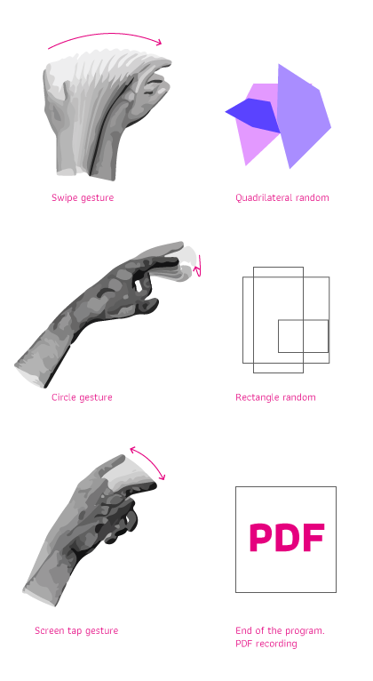
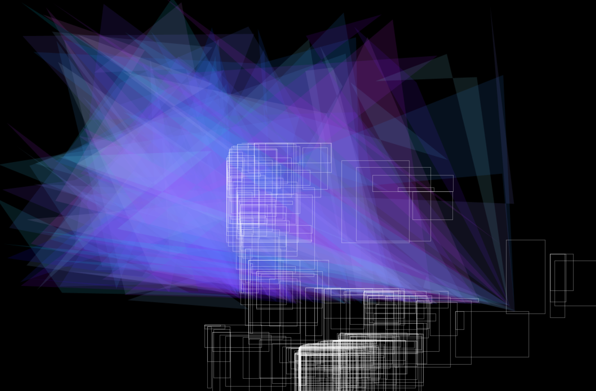
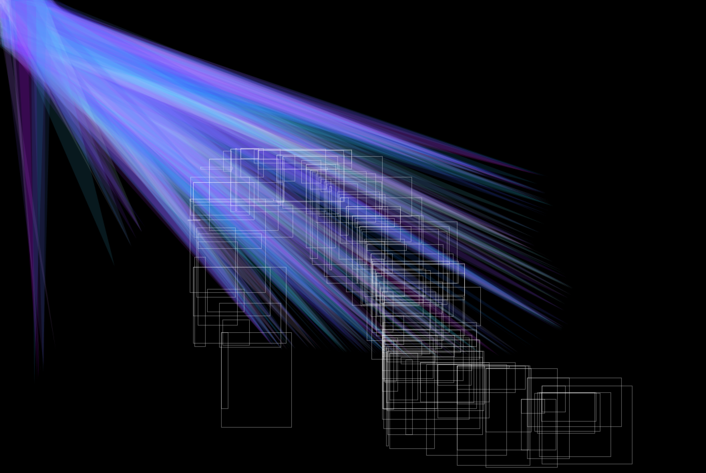

Project: Work with the « leap motion » device for an interactive poster.
Description: Leap Motion is composed with 3 leds and 2 video-cameras. It allows to reproduce our forearm gesture. The code of the interactive poster has been realized with Processing software et leap motion library. The patterns vary according to 3 key gestures. The swipe gesture allow to stop the program and print the poster.
Purpose: Draw in the empty space without medium. This program was used for young kids to observe both their space apprehension and gestures amplitude.
  Screenshots of the program
Wiki of the project